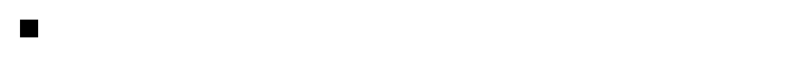

A scannable QR code, drawn as SVG, for putting a link, a Wi-Fi network or a 2FA secret on screen where a phone can pick it up. Reach for it wherever something has to get from this screen onto someone's device — a two-factor enrolment screen, a Wi-Fi guest network on a poster or a hotel card, an event ticket, a boarding pass or a venue check-in, a payment or invoice link, a table ordering code, a menu, a device or kiosk pairing step, an app-store or download link, an invite or referral link, a shipping or returns label, a warranty or product registration, a business card or conference badge, a receipt, a signup link on a slide, and any hand-off from a desktop app to the phone in someone's pocket. Common asks it answers: "qr code react", "react qr code component", "generate qr code react", "shadcn qr code", "qr code generator react", "qrcode.react alternative", "react-qr-code alternative", "qrcode npm alternative", "qr code without dependencies", "qr code no npm package", "qr code svg react", "qr code canvas vs svg", "qr code server component", "qr code next.js app router", "qr code ssr", "wifi qr code generator", "share wifi password qr code", "WIFI: qr format", "otpauth qr code", "2fa qr code react", "totp enrollment qr", "google authenticator qr code", "qr code not scanning", "qr code won't scan", "qr code scans on some phones", "quiet zone qr code", "qr code margin", "qr code dark mode", "inverted qr code not scanning", "white qr code on dark background", "qr code error correction level", "qr code with logo in middle", "qr code capacity limit", "qr code too long", "qr code changes size when text changes", "qr code utf-8", "qr code japanese characters", "qr code emoji", "qr code blurry", "qr code print quality", "qr code accessibility", "qr code screen reader", "qr code aria-label", "QRコード react", "QR コード 生成", "二次元コード コンポーネント", "WiFi QRコード". Official shadcn/ui has nothing here and the measurement is not close: fetching every entry in its registry today — 63 listed, 62 fetchable, questionnaire is indexed and 404s on both style tracks — and searching all 245,417 bytes of it, the strings qr, QR, Reed, Galois, errorCorrection, quietZone, finderPattern, alignmentPattern, shapeRendering, crispEdges, otpauth, wifi, barcode and scanner are every one of them a zero hit. So this gets solved by adding a package, and that is the first thing worth knowing about this one: the encoder is in the file. Three packing modes chosen by content, all four correction levels, versions 1 to 40, Reed–Solomon over GF(256), block interleaving, and all eight masks scored — no dependencies at all, not even an icon, in a registry whose 83 other components have never needed more than lucide-react. Because a QR encoder's bugs are invisible, correctness here is measured rather than asserted. Every grid this ships was rendered to a PNG and read back by Apple's Vision framework, an independent decoder sharing no code with it: 426 codes on 2026-09-12, covering all 40 versions at all four levels, every mask forced, the mode and capacity boundaries, UTF-8 and emoji, a version 40 code at its 2,953-byte maximum, and 240 random payloads at the shipped defaults, each decoded string compared byte for byte with its input. That sweep found a real bug — one error-correction table was a row short from version 32 up, so nine versions produced codes that rendered perfectly and decoded to nothing — and the verified grids are frozen in the test suite so it cannot come back. Beyond the encoding, three things decide whether a code actually works. The first is the quiet zone: a scanner finds a code by finding its border, so four light modules of margin are not decoration, and a code butted against other content renders beautifully and is simply never seen. Nothing catches that except pointing a real camera at it, so the default is the required value and the light ground is drawn as part of the SVG rather than left to whatever is behind it. The second is colour, which is functional rather than decorative and therefore does not follow your theme by default: dark modules on a light ground is what the format specifies and what decoders assume, inverted codes are read by some phones, fewer cheap scanners and no printer at all. So the code stays black on white in dark mode — which is what a boarding pass, a wallet app and a bank statement all do — and moduleClassName and backgroundClassName are there when you have tested otherwise. The third is SVG rather than canvas: a canvas is a bitmap that resamples badly the moment it is scaled or printed, and to anything that is not an eye it is a blank rectangle. This carries role="img" and a label, and deliberately does not read the payload aloud unless you ask — sixty characters of URL letter by letter helps nobody, and the two things most often in a code are a Wi-Fi password and a 2FA secret. A QR is something you point a second device at, so put the payload on the page as well: a real link, or a code beside a copy button. It has no hooks, no state and no effects, so there is no "use client" on it: it renders on the server and ships zero JavaScript for what is a static picture, with a small internal cache keeping a re-rendering parent from re-encoding. errorCorrection defaults to M and is boosted automatically to the strongest level that still fits the same version, since the slack would otherwise be spent on padding — the code is the same size and survives more damage. minVersion holds the size still for a payload that changes while it is on screen, like a rotating token, which would otherwise resize the code mid-scan. A payload too long to fit throws from encodeQr — a truncated code still scans and hands back the wrong string — while the component renders a fallback instead of taking the layout down. Two payload builders come with it, both for the traps rather than the strings: wifiPayload escapes the ; : , and backslash that a generated password contains and that otherwise truncate the network details silently, and quotes an all-hex value so it is not read as a raw key; otpauthUri puts the issuer in both the label prefix and the query parameter, because different authenticator apps read different ones, and escapes the two halves of the label separately so the colon separator survives while a + or a space in the address does not break it. encodeQr and qrPath are exported for a code you want to rasterise on a server, put on a label, or draw yourself. Within pulld it completes the two-factor setup screen alongside otp-input and recovery-codes, and sits beside copy-button and copy-field, which are what you put next to it for everyone who cannot scan it.

Rendered on the shadcn default neutral palette with harness-generated props.
pnpm dlx shadcn@4.21.0 add @pulld/qr-code
| licence | POINTER |
|---|---|
| primitive base | none |
| type | registry:ui |
| files | src/components/ui/qr-code.tsx |
| npm deps pulled | none beyond the pre-installed peer set |
| registry deps | — |
| semantic / palette / hex | 1 / 4 / 0 |
| writes shared ui/ | yes — can overwrite the project’s own primitives |